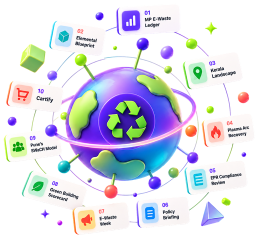

Eleven submissions.
One connected
sustainability stack.
A semester archive of evidence, urban mining recovery, and circular adoption — state e-waste ledgers, plasma-arc thermal smelting, EPR compliance reviews, a campus activation, and four deployed interactive web applications.

Every Submission, One Shelf.
Four ISA and seven ESE assignments, preserved as submitted. Filter by assessment type, thematic pillar, or search across keywords, technologies, and materials.
No matching submissions found
No records match your active search or filters. to view all eleven.
A Semester, Month by Month.
From curriculum baseline in July through thermal patents and AI recommender research in October. Select any timeline milestone to inspect the underlying submission.
Built to be Used, Not Just Submitted.
Four course submissions ship as live, production web applications accessible anywhere without login or setup.
Three Threads, Eleven Submissions.
The semester follows a continuous loop: first measure the physical problem, then recover high-value materials, then build the regulatory and economic architecture for mass adoption.
Resource & Evidence Library.
Every submission links to verified documents: formal state reports (DOCX), 7-sheet analytical spreadsheets (XLSX), conference slide decks (PPTX), IEEE papers (PDF), and high-resolution posters (JPEG).
| Document Title | Submission | Type | Details | Access |
|---|